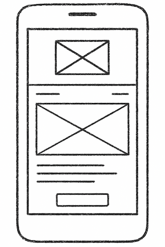
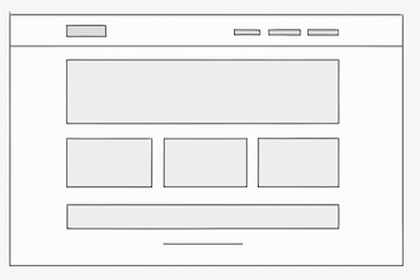

Site Name
Football Skills Hub
This name represents a central place for aspiring footballers to learn, improve, and explore key techniques and drills. It’s short, memorable, and directly tied to the content of the site.
Optional Domain: footballskillshub.org
Site Purpose
The website will serve as a learning hub for footballers. It will provide training tips, skill breakdowns, videos, and practice drills for beginners and intermediate players. It will also include resources for goal-setting and motivation.
Scenarios
- “What are the best drills to improve my dribbling skills?”
- “How can I learn to shoot more accurately?”
- “Where can I find football training resources online?”
Color Schema
The chosen colors reflect the energy and identity of football:
- Primary (Green #008751): For headers, buttons, and navigation bar.
- Accent (Gold #FCD116): For highlights, links, and call-to-action elements.
- Neutral (Dark Gray #222): For body text.
Typography
Fonts selected for this site:
- Roboto (sans-serif): Used for body text for readability.
- Montserrat (sans-serif): Used for headings, navigation, and emphasis.
Wireframes
Mobile View:
Desktop View:
